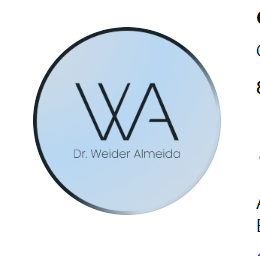
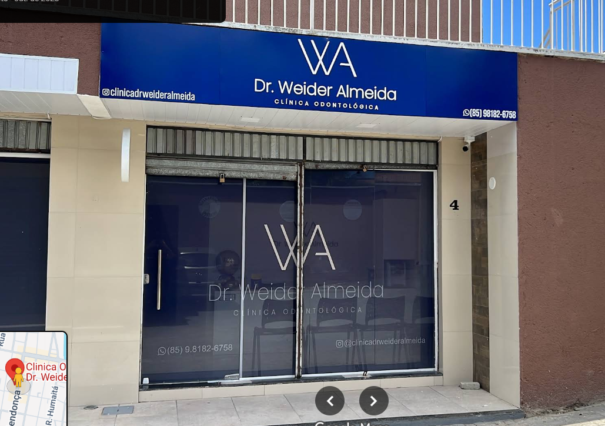
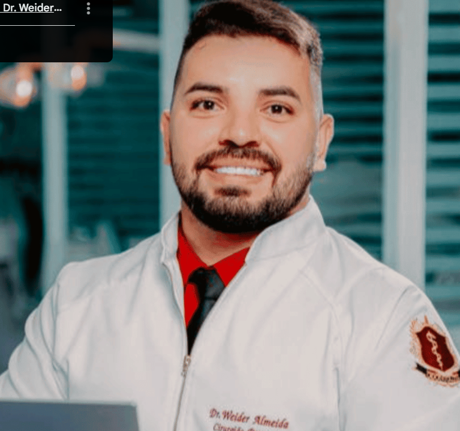

01
01Implantes
Uma possibilidade para repor dentes perdidos e reabilitar o sorriso.
Consultar disponibilidade →
AgendarSeu sorriso merece o melhor cuidado.
Cuidado odontológico perto de você, com conversa clara desde o primeiro contato até a avaliação.

Exemplos ilustrativos de tratamentos odontológicos. Confirme com a clínica a disponibilidade e a indicação após avaliação profissional.
01Uma possibilidade para repor dentes perdidos e reabilitar o sorriso.
Consultar disponibilidade → 02
02Uma opção de acompanhamento para alinhamento dos dentes e cuidado com a mordida.
Consultar disponibilidade →Opções estéticas para cor e formato do sorriso, conforme avaliação.
Consultar disponibilidade → 04
04Alternativas para reposição dentária, conforme avaliação profissional.
Consultar disponibilidade →
A consulta começa entendendo o que trouxe você até aqui. Depois da avaliação, a equipe explica os caminhos possíveis para o seu sorriso.
Conte o que você procura e tire suas primeiras dúvidas.
A equipe informa a disponibilidade de atendimento.
Receba orientação profissional para os próximos passos.
Consulte a disponibilidade de atendimento diretamente pelo WhatsApp.
Informações diretas para facilitar seu primeiro contato.
Toque em qualquer botão de WhatsApp do site e envie a mensagem. A equipe informa os horários disponíveis.
Entre em contato pelo WhatsApp para conversar com a clínica sobre sua necessidade e confirmar os atendimentos disponíveis.
Em Genibaú, Fortaleza. Use o botão do Google Maps para consultar a localização e abrir a rota.
Os valores dependem da avaliação e do tratamento indicado. Fale com a equipe pelo WhatsApp para receber as orientações.
Chame a Clínica Dr. Weider Almeida e consulte os horários disponíveis para avaliação.
Conversar no WhatsApp